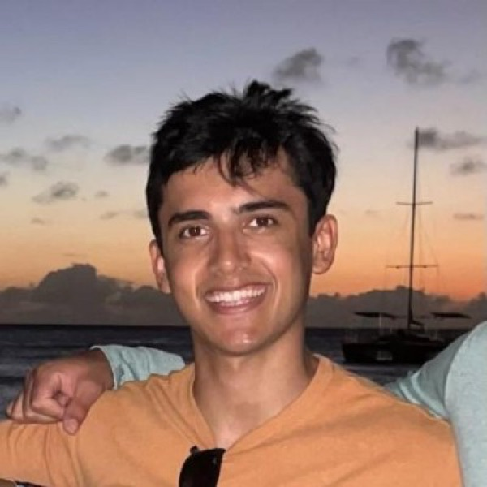
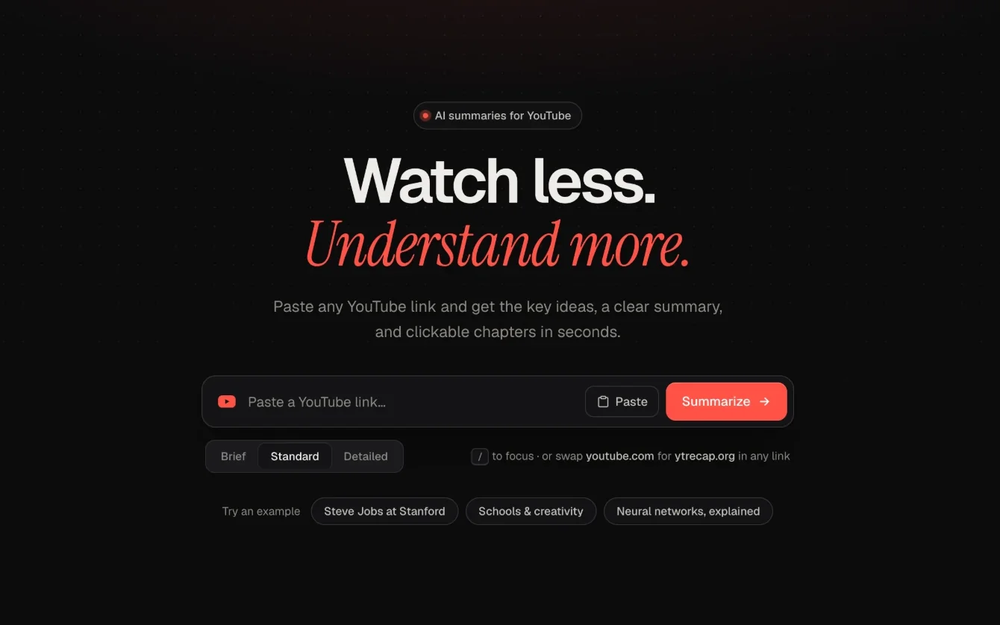
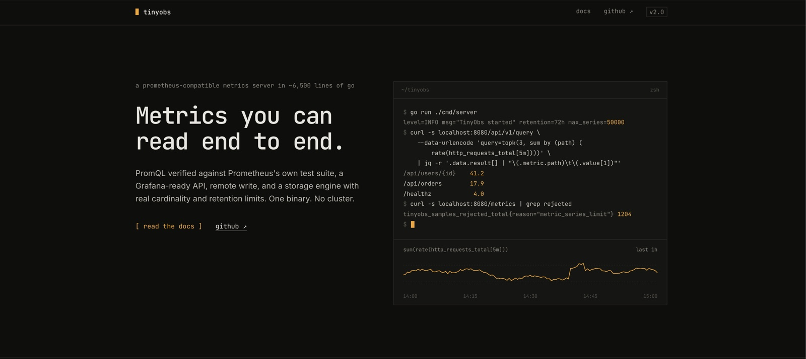
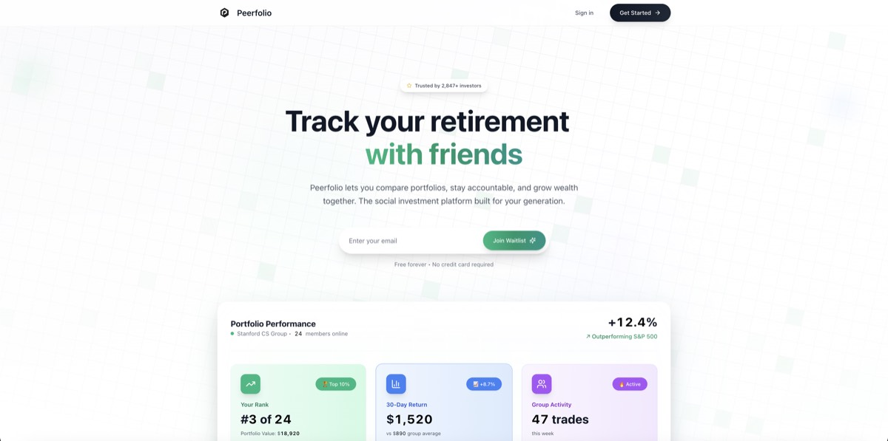

Instrumentation
OpenTelemetry pipelines that follow an event from a messaging queue, through daemon processes and AWS Lambdas, into Route53 synchronization workflows.

nick tillmannStaff Software Engineer · IBM · Raleigh, NC
I'm a software engineer at IBM, working on NS1 Connect. Most of what I do is observability work: OpenTelemetry pipelines, dashboards, and the Go services that keep DNS records in sync.
01
NS1 Connect is IBM's managed DNS platform. My work there is mostly instrumentation, so that when something breaks there's enough signal to figure out what happened.
OpenTelemetry pipelines that follow an event from a messaging queue, through daemon processes and AWS Lambdas, into Route53 synchronization workflows.
Honeycomb dashboards, alerting workflows and SLO monitors, used by engineering teams to cut down how long it takes to notice something is wrong.
Backend work and gRPC services for distributed DNS synchronization, processing lambda-driven events across queues between AWS Route53 and NS1.
02
03
04

01 · live · python flask
Summarizes a YouTube video by parsing its closed captions and passing them to an LLM. Built in 2023, in Python and Flask.
ytrecap.org
02 · Go · open source
Monitoring, metrics collection and distributed tracing for microservices, written in Go. A much smaller version of what I work on during the day.
read the source
03 · live · plaid
Links brokerage accounts through Plaid, aggregates holdings into one portfolio, and lets you compare performance with friends. Most of the work is in reconciling account data, since every brokerage models it differently.
peerfolio.orgAlso on GitHub: StockPulse, CryptoTracker, GradeMyAid.
05
Happy to talk about observability, distributed systems, piano, or where to go skiing.
ntillmann1439@gmail.com